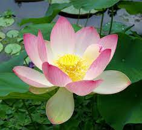

Red Rose


The Token of Love
More than 400,000 different species of flowers exist in the world, but when it comes to a favorite, one in particular stands out: the red rose. With over 150 different species and 3,000 members of the rose family in existence — the majority of them some shade of red — this flower is as culturally significant as it is ubiquitous in our lives.
Nearly everyone has some type of treasured memory involving a red rose, whether it’s buying them for a first love, receiving them on an anniversary, gifting them to a friend or family member, or treating yourself to one to mark a special day.
But as much as we know about and love red roses, we’re betting a few of these fun facts and unexpected tidbits about the flower might just surprise you. More than 400,000 different species of flowers exist in the world, but when it comes to a favorite, one in particular stands out: the red rose. With over 150 different species and 3,000 members of the rose family in existence — the majority of them some shade of red — this flower is as culturally significant as it is ubiquitous in our lives.
Nearly everyone has some type of treasured memory involving a red rose, whether it’s buying them for a first love, receiving them on an anniversary, gifting them to a friend or family member, or treating yourself to one to mark a special day.
Nearly everyone has some type of treasured memory involving a red rose, whether it’s buying them for a first love, receiving them on an anniversary, gifting them to a friend or family member, or treating yourself to one to mark a special day. Nearly everyone has some type of treasured memory involving a red rose, whether it’s buying them for a first love, receiving them on an anniversary, gifting them to a friend or family